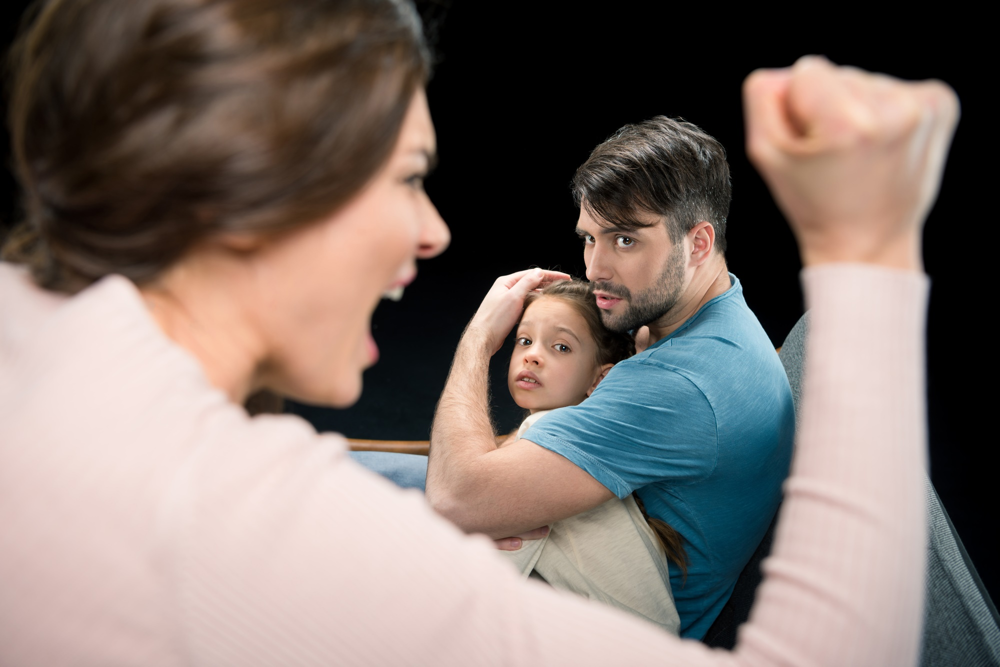
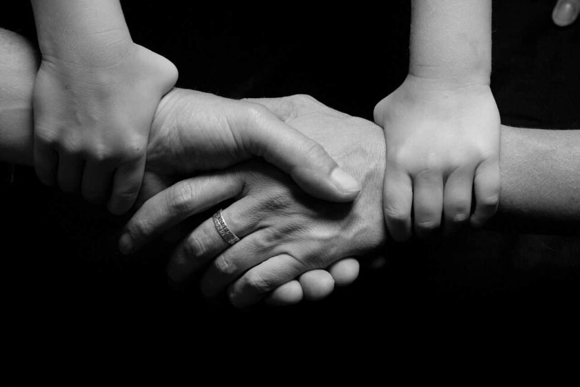

SIN VIOLENCIA
LUCHA CONTRA LA VIOLENCIA
En este espacio, estamos comprometidos con un propósito fundamental: erradicar la violencia en todas sus formas. Creemos firmemente en la construcción de un mundo donde cada individuo pueda vivir sin temor, disfrutando de la paz y la seguridad que todos merecemos. Aquí, encontrarás recursos valiosos, información esencial y una comunidad comprometida que trabaja incansablemente para combatir y prevenir la violencia.
Nuestra misión es crear conciencia, educar y promover el cambio a través de la información y la acción. Creemos en el poder de la unión, y alentamos a cada visitante a unirse a nosotros en este movimiento para construir un futuro más seguro y armonioso. Ya sea que estés aquí para aprender, compartir tu historia o contribuir con tus habilidades, tu participación es invaluable. Explora nuestras secciones dedicadas a la educación, la prevención y el apoyo. Juntos, podemos marcar la diferencia y avanzar hacia una sociedad en la que la violencia sea cosa del pasado. Te invitamos a sumergirte en esta experiencia enriquecedora y a unirte a nosotros en esta lucha vital. ¡Gracias por ser parte del cambio!
A nivel mundial, existen primeros indicios de un aumento considerable de reportes de casos de violencia contra las mujeres y las niñas en el ámbito doméstico, vinculado al COVID-19, a las líneas de apoyo, a los refugios o albergues para mujeres y a la policía.
En los Estados Unidos, una de cada cinco mujeres son víctimas de violencia sexual en algún punto de sus vidas. Además, una de cada tres mujeres y uno de cada seis hombres experimentaron algún tipo de violencia sexual durante sus vidas.
En México, la violencia psicológica es la que presenta mayor prevalencia (51.6%), seguida de la violencia sexual (49.7%), la violencia física (34.7%) y la violencia.
En América Latina y el Caribe, en el año 2020, al menos 4,091 mujeres fueron víctimas de feminicidio en 26 países. A pesar de la mayor visibilidad y condena social, la violencia contra las mujeres sigue siendo un problema grave en la región.
En España, según un informe del Ministerio de Igualdad publicado en septiembre de 2020, 1 de cada 2 mujeres (la mitad de las mujeres que viven en España) han sufrido algún tipo de violencia machista en su vida, incluyendo situaciones de acoso
Es importante tener en cuenta que estas estadísticas son solo una muestra y que la violencia de género es un problema global que afecta a mujeres y niñas en todo el mundo.